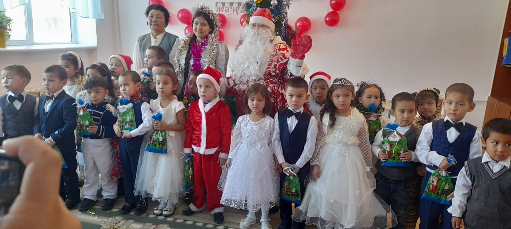
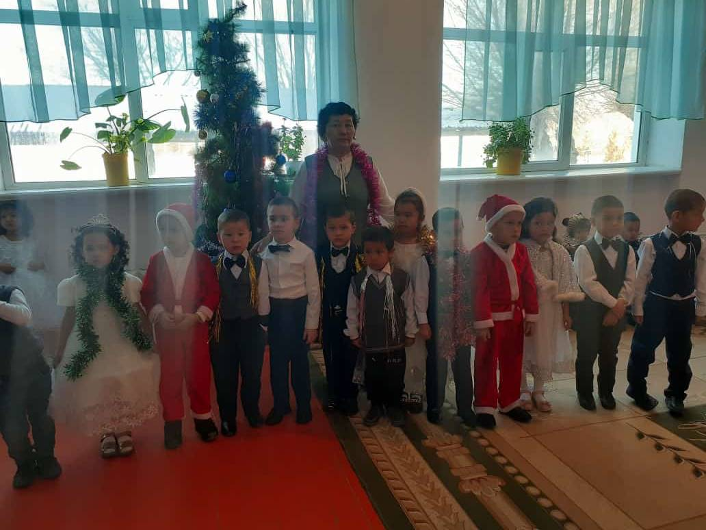

Төрлет, төрлет жаңа жыл!
1 Жаңа
жыл мерекесіне орай безендірілген залға музыка ырғағымен сәнді киінген балалар
залға кіреді.
Тәрбиеші:
Жаңа жылдың таңы неткен арайлы,
Ақ мамыққа бөлеп алды маңайды.
Бақыт, шаттық, молшылық пен тыныштық,
Бәрімізге әкелсін мына арай жыл.
Ән: «Ақ таяғын таянып!» Қыздар
Келген қонақтармен ойын: «Жаңылтпашты қайтала»
1
Құс қайтты, қыс келді
Қыс қайтты, құс келді
2
Шырша сынса өспейді
Сынса шырша өспейді
3
Қыста боран болады
Қыздар шәлі орамал оранар
Тәрбиеші: Жарайсыңдар,
балалар! Балалар мен сендерге жұмбақ жасырайын.
Соны шешесіңдер ме?
Балалар: Иә.
Жұмбақ:
Ақсақалды шал жылына
Бір - ақ рет келіп кетеді
Қызы мен ұлына
Сыйлық алып келеді. (Аяз Ата)
Тәрбиеші: Балалар, енді жаңа жылдық мерекемізге Аяз атаны шақырайық. Ол
орманда жүріп адасып кеткен болар.
Балалар: Аяз Ата! Аяз Ата! – деп айғайлап шақырады.
Аяз Атаның орнына мыстан кемпір ұшып кіреді де шыршаны бір айналып барып,
қонақтардың алдына келіп тұра қалады.
Мыстан: Пай - пай! Мен қайда келдім өзі. Мына
шыршаның кереметін - ай! Үйге алып кетпесем бе екен? (Осы кезде мыстан төменге
еңкейіп, шыршаның түбімен жұлып алғысы келеді.)
Тәрбиеші: Мыстан кемпір! Мыстан оған мән бермейді де шыршаны жұлуын
тоқтатпайды
Біз «Жаңа жыл» мейрамын тойлап жатырмыз, тимеңіз біздің шыршамызға! (Мыстан
сөзге мән бермей, былай дейді: «Ту - у - у!» ). 2 2 2
Маңдайдағы терін сүртіп,
тұрып. Мына шыршаның тамырының терең отырғызылғанын
- ай, жұлынбайды ғой.
Мыстан Кемпір кетіп қалады.
Тәрбиеші: Балалар,
Кәне тойды жалғастырайық,
Аяз Ата кешікті ғой. Мүмкін
адасып кеткен болар. Әнімізде шырқап, атамызды шақырайық!
Есіктің сыртынан дауыстар естіліп, іле - шала залға Аяз - ата мен ақшақар
кіреді.
Қарашы біз тойға келдік!
Қане балалармен амандасайық.
Аяулы аналарға, ардақты ұл - қыздарға
Бүлдіршін балаларға бір сәлем!
Қандай жарқын жүздерің
Қандай әсем жырларың
Асаулармен алысқан,
Асау желмен жарысқан
Аталарың сендерге
Шаршап келді алыстан
(Балалар амандасады.)
Аяз - ата: Рахмет, балаларым!
Аяз - ата: Қарашы балалардың киімі қандай әдемі. Шыршада әсем безендірілген
екен. Бәрі де тым сұлуланып кетіпті.
Шырша шамын жағайық,
Жаңа жыл тойын ашайық!
Тәрбиеші: Қане, шырша жағуға көмектесейік, балалар! Үшке дейін санайық: 1 - 2 –
3
Ән:
Шырша жыры Сая Қалдықыз
Ортаға тақпақтармен:
Жұбаныш
Жасыл желек жамылған
Асыл моншақ тағынған.
Міне сұлу шыршаның
Көптен күтіп сағынған.
Айбар
Келді, келді жаңа жыл,
Қуанып қарсы ала біл.
Аяз ата сыйлығын, Алайық айтып жаңа жыр.
Ақмедияр
Ақ сақалды таяқты
Қалың қырау қабақты
Аяз ата аямай
Бізге сыйлық таратты
3 Асылзат
Дала нұр, қала нұр,
Құтты болсын жаңа жыл!
Кел жаңа жыл біздерге,
Кел жаңа жыл, жаңа жыл.
Тәрбиеші:
Достарымыз бар қуанып,
Тамашалар кештер де
Талшыбықтай бұралып
Биші болам өскенде
Құрметті қонақтар, «Вальс» биін тамашалайық!
Фарида
Шеберін – ай аяздың
Әйнектерді қағаз ғып
Әшекейлеп қойыпты
Бірнеше ою ойыпты
Суреттерді әр үйге
Әйнектерге әрине
Түнде салып береді
Көзі қалай көреді?
Бекасыл
Жаңа жыл, жаңа жыл
Жаңалық ізде сен.
Жаңа ән, жаңа жыр,
Жазып бер бізге сен.
Назар
Жасыл шырша жанында
Айнала ойнап ән саламыз
Көңілді балалар
Жаңа жылды қарсы аламыз.
Оразхан
Жылдың әсем бұл шағы
Шыр айналдық шыршаны.
Шоқ жұлдыздай көктегі
Шыныны қағып тұр шамы.
Ән: «Шаршама ұстаз» Асылзат Қарақат
Қарақат
Жүзімізге күлкі ойнап
Қанаттанды жанымыз
Жаңа жылды біз тойлап
Шаттанамыз бәріміз!
4 Қалдықыз
Әдемілеп тізілген
Ойыншықтар тізілген
Қандай жақсы шыршамыз
Ән шырқайық баршамыз
А
Нұрмұхаммет
Аяз қысып, өрнек сызып,
Терезені торлайды.
Қарға омбығып,
Бет домбығып,
Балдырғандар ойнайды.
Гүннұр
Аспан жерге төгеді
Ақ күмісін уыстап
Жаңа жылда келеді
Бізге қарай жылыстап.
Нұргүл
Ақшақарға малынып
Аппақ тонын жамылып
Сақалы мен мұртына
Күміс моншақ тағынып
Аяз ата келеді
Балаларды сағынып.
Мүслим
Аппақ қыстың бояуы
Аппақ қыстың бораны
Ақ көрпеге орайды
Ақ қар байтақ даланы
Аяз шымшып қояды
Ақ құшағын жаяды
САЯ
Жайна шырша жарқылдап
Бейнесіндей сәбидің
Түрлене түс жасыл бақ
Қыс пен жазға бірдейсің.
Омар
Сақалының ұзын – ай
Саудыраған мұзын – ай
Жарқыраған оттары
Жаңа жылдың қызығы – ай.
5
Рамазан
Шыршамызды әсемдеп,
Ән шырқаймыз билейміз.
Өзімізде күлімдеп
Жабырқауды білмейміз.
Марғұлан
Жаңа жылда жаңаша
Тақпақ айтамыз.
Болсын риза балаша
Аяз атамыз.
Ән:Туған жер қыздар
Інжу
Билейміз де ойнаймыз
Балғын ұл - қыздар.
Жаңа жылдай жайнаймыз
Жарқын жұлдыздар.
Алдияр
Шанамен, шаңғымен,
Мұздарды сызалық.
Елемей ызғарды
Жаңа жыл бәйгесін
Келейік біз алып.
Ж Нұрмұхамбет
Ақ қырауға малынып
Сақалы да, мұрты да
Аяз ата сағынған
Сәлем берді жұртына.
Асылжан
Жаңа жылды біз тойлап
Шаттанамыз бәріміз.
Өлең де әзір, ән әзір,
Ойын да әзір, бәрі әзір.
Кел жаңа жыл біздерге,
Кел жаңа жыл, жаңа жыл.
Нартай
Сақалы аппақ күмістей
Тістері аппақ күріштей
Қызыл ала шапаны
Сағындым аяз атаны.
6 Наурыз
Әлде қарлы боранда
Тау басынан түсті ме?
Аяз ата оралды,
Ақ тон киіп үстіне.
Ән: «Әке Ана»Фарида
Тәрбиеші: Аяз Ата Сіз біздің балалардың өнерін тамашаладыңыз, Сізге ұнады ма?
Сыйлық әкелдіңіз бе?
Аяз Ата: Әрине мен жұмбақ жасырайын балалар сендерге
Жұмбақтар:
1. Қолы менен қаламы жоқ
Бірақ сурет салады көп Аяз
2. Суда қалқиды
Жылыда балқиды. Мұз
3. Қыста шыны болып қатады
Жылыда су болып жатады Мұз айдыны
4.
Аспаннан ақ ұлпа борады
Жер аппаққа оранды Қар
5. Табаныма байладым
Қос аяқпен айдадым Шаңғы
6. Қанаты жоқ ұшады
Аяғы жоқ желеді
Аузы жоқ ұлиды Боран
7. Зулап түсті төменге
Менсіз шықпас төбеге Шана
Балалардың
орындауында «Шалхан» көрінісін тамашалайық!
Аяз Ата: Жарайсыңдар балаларым! Мені бүгін бір қуантып, алыс жерден шаршап
келгенде көңілімді көтердіңдер. Барлықтардың да ақылды, білімде де өнерлі
екенсіңдер.
Киген киімдерін қандай әдемі! Солай емес пе қызым? Біздің сыйлымызға риза
болыңдар. Ал енді біз жолға шығайық. Басқа да балалардың өнерін
тамашалайық. Ал, балаларым, сендер өсе беріңдер,. Аспандарын ашық болсын! Қош
болыңдар! (қолдарын бұлғап шығып кетеді..........)

«Бабайқорған» жалпы орта мектебі КММ
Төрлет,төрлет
жаңа жыл
Тәрбиеші: Калыбаева Камилаш
2022-2023 ж